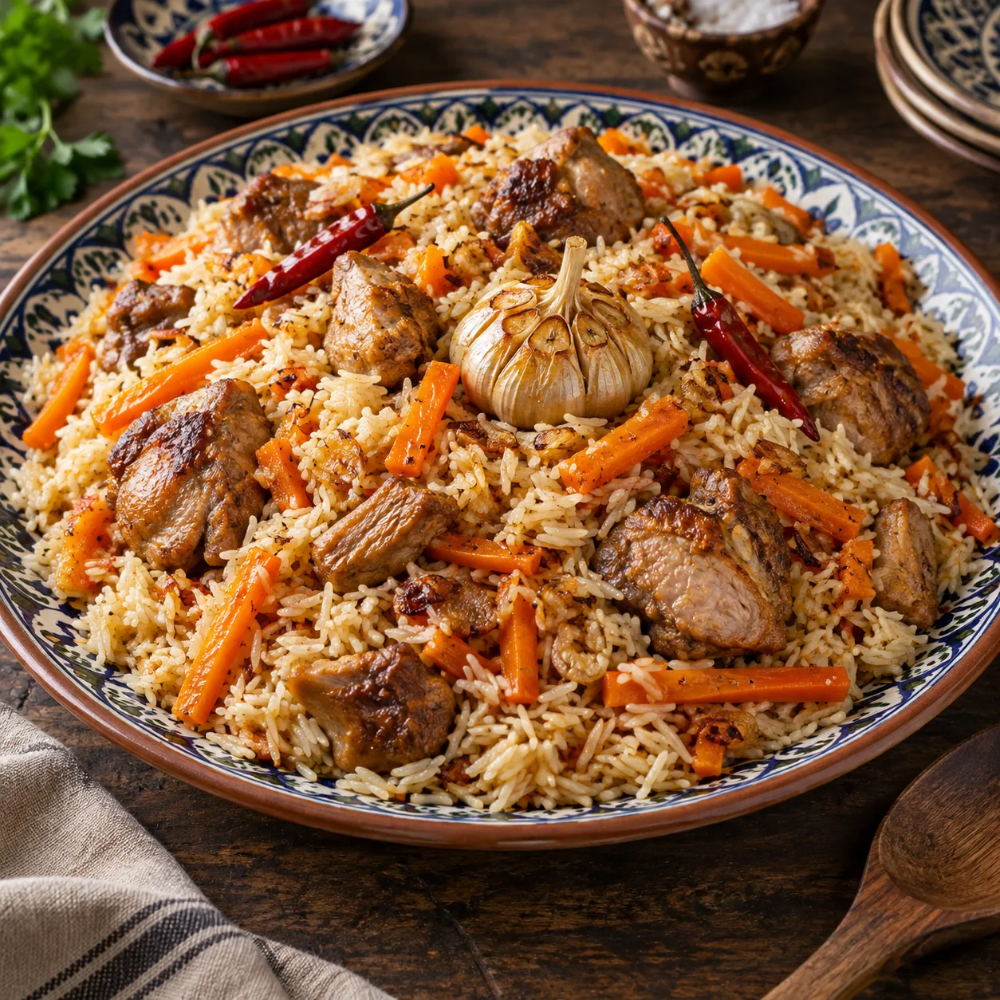

Unsere Klassiker · Reisgerichte
Plov

Ein herzhafter Plov mit lockerem Reis, süßen Karotten und saftiger Putenoberkeule. Das Gericht wird Schicht für Schicht gegart und erst ganz am Ende vorsichtig vermischt.
Zutaten
Zubereitung
- Vorbereiten. Fleisch in ca. 5–7 cm große Stücke schneiden und mit einem Teil des Salzes würzen. Möhren in ca. 5 mm dicke Stifte, Zwiebeln in Würfel oder Halbringe schneiden. Knoblauch nur von der losen äußeren Schale befreien. Reis mehrfach waschen, bis das Wasser weitgehend klar bleibt.
- Kräftig anbraten. Kazan und Öl erhitzen, ohne das Öl stark rauchen zu lassen. Fleisch ohne Deckel portionsweise rundherum braun anbraten und herausnehmen. Sammelt sich Wasser, kleinere Portionen braten.
- Schichten aufbauen. Zwiebeln im selben Öl goldgelb braten. Fleisch zurückgeben, Möhren darüber verteilen und Knoblauch sowie ganze Chilis einsetzen. Die unteren Schichten ab jetzt nicht mehr umrühren.
- Basis garen. Heißes Wasser bis knapp an die Oberkante der Möhren angießen. Restliches Salz und ca. ein Drittel des Kreuzkümmels zugeben, Zucker nur bei Bedarf. Ohne Deckel 45–60 Min. sanft köcheln lassen, bis das Fleisch fast weich ist; bei Rind gegebenenfalls länger. Bei Bedarf heißes Wasser ergänzen. Währenddessen den Reis 30–45 Min. in warmem Wasser einweichen.
- Reis offen garen. Chilis herausnehmen. Reis abtropfen lassen und gleichmäßig auflegen. Heißes Wasser über einen Schaumlöffel angießen, bis der Reis gerade knapp bedeckt ist. Offen bei höherer Hitze ca. 15–20 Min. köcheln lassen. Nur die Reisschicht vorsichtig von außen nach innen und von unten nach oben wenden. Ist der Reis noch hart und die Flüssigkeit aufgebraucht, etwas heißes Wasser ergänzen.
- Fertig dämpfen. Steht oben kein Wasser mehr und hat der Reis im Kern noch leichten Biss, die Reisschicht zu einem Hügel zusammenschieben. Mit einem Löffelstiel 5–6 Löcher bis zum Boden machen. Restlichen Kreuzkümmel zwischen den Händen zerreiben und darüberstreuen. Zugedeckt 20 Min. auf kleinster Flamme oder wenig Restglut gar ziehen lassen.
- Servieren. Deckel seitlich abheben und den Reis probieren: Er soll weich und locker sein. Das Fleisch muss zart und die Pute vollständig durchgegart sein. Fleisch herausnehmen und kleiner schneiden. Reis und Möhren vorsichtig auf einer Platte anrichten, Fleisch und Knoblauch daraufgeben. Überschüssiges Öl im Kazan zurücklassen.
Hinweise für den Kazan
Die Mengen lassen Platz zum Arbeiten und sind keine maximale Befüllung. Bei fettem Fleisch die kleinere Ölmenge wählen. Salz portionsweise zugeben und abschmecken; Wasser nach dem beschriebenen Füllstand ergänzen.
12-L-Kazan: Die hinterlegte Variante ergibt etwa 14–16 Portionen.
16-L-Kazan: Die hinterlegte Variante ergibt etwa 18–20 Portionen. Für die größere Fleischmenge zusätzliche Anbratdurchgänge einplanen.
Am Feuer: kräftig anbraten → sanft köcheln → Reis offen garen → bei minimaler Hitze zugedeckt dämpfen.
Alle Kazan-Rezepte →Dazu passt
Tipp
Im Originalrezept sind auch Rosinen, getrocknete Berberitzen und Kichererbsen enthalten. In unserer Variante lassen wir diese drei Zutaten weg.